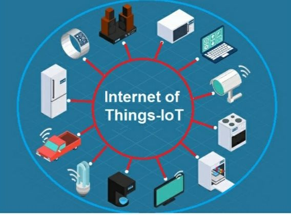

Introduction
The Internet of Things, known as IoT, is a technology that connects physical devices to the internet. These devices can collect, send, and receive data without human intervention. IoT is changing the way people live and work by making everyday objects smarter and more efficient.
What Is Internet of Things?
Internet of Things refers to a network of physical devices such as sensors, appliances, vehicles, and machines that are connected to the internet. These devices communicate with each other and share data to perform tasks automatically.
How IoT Works
IoT works by using sensors, internet connectivity, and data processing systems. A device collects data through sensors, sends it through the internet to a system or cloud platform, processes the data, and then performs an action based on the result. This process happens continuously and often without human input.
Examples of IoT Devices
IoT is used in many real-world devices and systems.
- Smart watches
- Smart TVs
- Smart home lights
- Security cameras
- Smart refrigerators
These devices improve convenience and efficiency in daily life.
Conclusion
Internet of Things is transforming the world by connecting physical devices to the internet. It improves daily life, increases efficiency, and supports automation across many industries. Learning IoT helps students understand modern technology and prepare for future innovations.